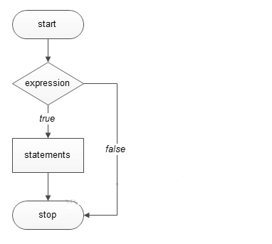
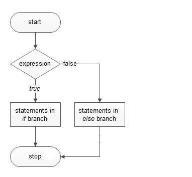
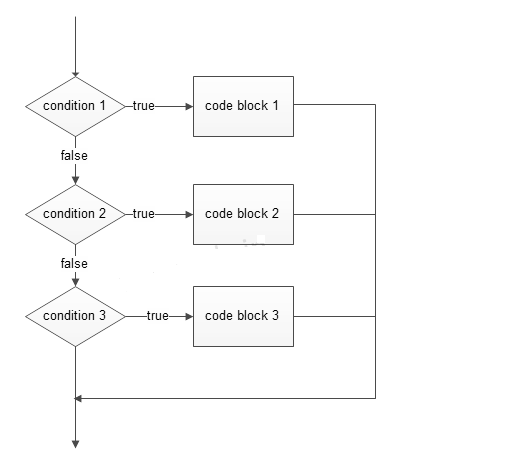

« Previous
Next »
Decision Making In Python
Decisions in a program are used when the program has conditional choices to execute code block. Let's take an example of traffic lights, where different colors of lights lit up at different situations based on the conditions of the road or any specific rule.
It is the prediction of conditions that occur while executing a program to specify actions. Multiple expressions get evaluated with an outcome of either TRUE or FALSE. These are logical decisions, and Python also provides decision-making statements that to make decisions within a program for an application based on the user requirement.
Python provides various types of conditional statements:
|
Statement | Description |
|---|
| if Statements | It consists of a Boolean expression which results is either TRUE or FALSE followed by one or more statements. |
| if else Statements | It also contains a Boolean expression. The if statement is followed by an optional else statement & if the expression results in FALSE, then else statement gets executed. It is also called alternative execution in which there are two possibilities of the condition determined in which any one of them will get executed. |
| Nested Statements | We can implement if statement and or if-else statement inside another if or if - else statement. Here more than one if conditions are applied & there can be more than one if within elif. |
if statement
The decision-making structures can be recognized and understood using flowcharts.
Figure - If condition Flowchart:

syntax
if expression:
#execute your code |
Example
a = 15
if a > 10:
print("a is greater") |
Output
if else statements
Figure - If else condition Flowchart:

syntax
if expression:
#execute your code
else:
#execute your code |
Example
a = 15
b = 20
if a > b:
print("a is greater")
else:
print("b is greater") |
Output
elif Statements
elif - is a keyword used in Python replacement of else if to place another condition in the program. This is called chained conditional.
Figure - elif condition Flowchart:

Output
if expression:
#execute your code
elif expression:
#execute your code
else:
#execute your code |
Example
a = 15
b = 15
if a > b:
print("a is greater")
elif a == b:
print("both are equal")
else:
print("b is greater") |
Output
NoteWe can write if statement in both ways, within parenthesis or without parenthesis/ brackets, i.e. ( and ).
Single Statement Condition
If the block of an executable statement of if - clause contains only a single line, programmers can write it on the same line as a header statement.
a = 15
if (a == 15): print("The value of a is 15")
|
« Previous
Next »